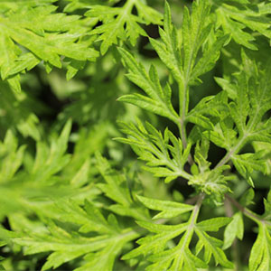

こだわりの素材
熱海産
無農薬で作られた熱海産のレモン、形はバラバラですけど、味は折り紙つき！ジューシーで美味しい
紅の小豆
北海道で大切に作られた小豆。和菓子の命とも言える餡子を作り和菓子に魂を吹き込みます。
真っ白なお米
新潟や山形県生まれのお米、他のお米と比べ甘みが多くこのお米で作る和菓子は格別な美味しさです。

こだわりのよもぎ
新芽だけを摘んだこだわりのよもぎ、新潟の雪解けのからすぐのよもぎを摘み草団子などにふんだんに使います。
新鮮な玉子
岩手県森アーク牧場生まれの玉子は世界から定評を受けるほどの美味しさを誇ります。
雪のような小麦粉
北海道から届いた雪のように白い小麦粉、饅頭、焼き菓子に使われていて、収穫後農薬の心配もありません。
商品紹介
彩菜菓やきいもさん
有機無農薬さつまいも、たっぷりの案をバター香る生地で包み焼き上げました。 シナモンを使用しています。
有機無農薬さつまいも、たっぷりの案をバター香る生地で包み焼き上げました。 シナモンを使用しています。
蒲田温泉まんじゅう
蒲田といえば温泉！「蒲田」の焼き印が押されたまんじゅうです。あんこをよく練り上げゆっくりと蒸してつくっています。和菓子屋清野で一番に売れている商品です。
蒲田といえば温泉！「蒲田」の焼き印が押されたまんじゅうです。あんこをよく練り上げゆっくりと蒸してつくっています。和菓子屋清野で一番に売れている商品です。
かぼちゃまんじゅう
外も中身もかぼちゃをたっぷり練ったおまんじゅうです。一口食べればかぼちゃの甘さが口の中に広がります。
外も中身もかぼちゃをたっぷり練ったおまんじゅうです。一口食べればかぼちゃの甘さが口の中に広がります。
店舗情報
b
c